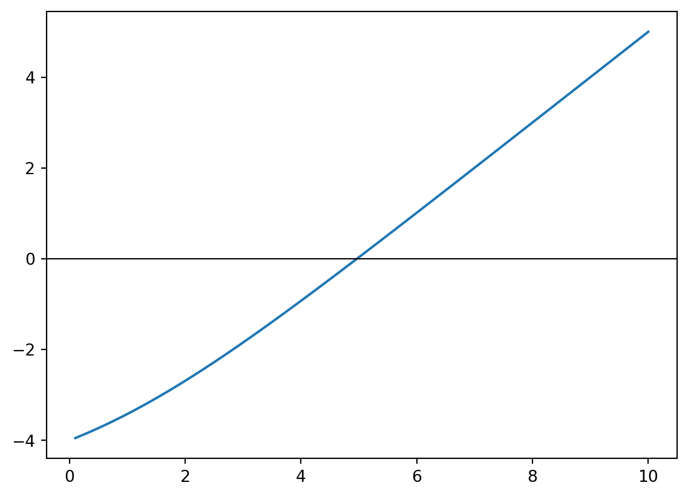
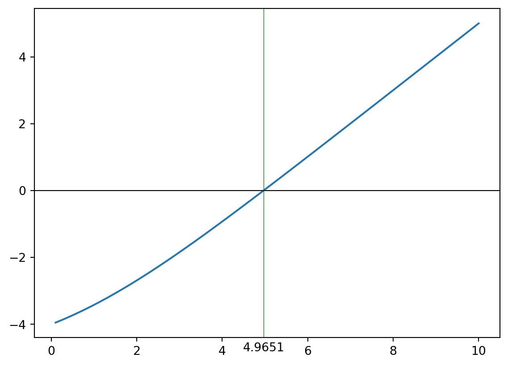

def persilangan_pembahagi_dua(fungsi, kiri: float, kanan: float, ketepatan: float = 1.0e-6) -> float:
# !! `fungsi` ialah fungsi yang kita nak tahu puncanya (titik persilangan)
# [1] Pilih dua titik, `kiri` dan `kanan`.
jarak = abs(kanan-kiri)
had: int = 100 # Untuk letak had berapa kali boleh ulang
ulangan: int = 1 # Untuk kira berapa kali dah ulang
while jarak > ketepatan:
# [2] Dapatkan titik `tengah`
tengah = (kiri+kanan)/2.
# [3] Semak sama ada persilangan berlaku di julat pertama [`kiri`,`tengah`]
if (fungsi(kiri)*fungsi(tengah)) < 0:
# Jika ya, balik ke langkah (1) dengan nilai baharu kiri=kiri dan kanan=tengah
# Ulangan [1] Pilih dua titik, `kiri` dan `kanan`.
kiri = kiri
kanan = tengah
else:
# Jika tidak, balik ke langkah (1) dengan nilai baharu kiri=tengah dan kanan=kanan
# Ulangan [1] Pilih dua titik, `kiri` dan `kanan`.
kiri = tengah
kanan = kanan
# [4] Ulang langkah [1] - [3] sampai `jarak <= ketepatan`
jarak = abs(kanan-kiri)
# Kalau dah lebih had, kita keluar. Kita tak nak benda ni ulang sampai bila-bila tak berhenti.
ulangan += 1
if ulangan == had:
raise ValueError(f'Sudah {had} kali diulang tetapi masih tak jumpa jawapan.')
return tengahLampiran A — Penyelesaian Berkomputer Untuk Sesaran Wien
Pers. 5.7 yang muncul dalam bahagian 5.1 berbentuk begini \[ X\frac{e^X}{e^X-1} = 5. \tag{A.1}\]
Agak sukar untuk menyelesaikan persamaan ini pakai tangan jadi kita rujuk kaedah berangka.
Note
Secara ringkasnya, kaedah berangka cuba mendapat jawapan penghampiran melalui pemanipulasian angka. Bandingkan dengan kaedah beraljabar yang mendapat jawapan tepat melalui mantik terhadap simbol. Contoh kaedah berangka ialah pencarian titik silang antara graf dengan garis \(y=0\) melalui cuba jaya berulang kali.
Bagi mendapatkan nilai \(X\) dalam pers. A.1, kita harus akui ia sama dengan \[ X\frac{e^X}{e^X-1} - 5 = 0 \] lalu kita gantikan 0 menjadi pembolehubah \(y\), \[ X\frac{e^X}{e^X-1} - 5 = y. \tag{A.2}\] Persamaan ini mewakili graf \(x\) melawan \(y\). Nilai \(X\) yang kita mahukan ialah apabila \(y=0\). Permasalah ini telah bertukar menjadi permasalah pencarian titik silang graf dengan garis \(y=0\).
A.1 Kaedah Pembahagi Dua
Kaedah paling mudah nak faham dan buat untuk mencari titik silang graf dengan garis \(y=0\) ialah kaedah pembahagi dua. Langkah-langkahnya ialah seperti berikut:
- Pilih dua titik,
kiridankanan. Jauh-jauh pun tidak mengapa asalkan titik persilangan itu berada di antara dua titik ini. - Dapatkan titik
tengahlalu kita peroleh dua julat: julat [kiri,tengah] dan julat [tengah,kanan]. - Semak samada persilangan berlaku dalam julat pertama atau tidak. Persilangan ini boleh disemak dengan melihat sama ada dua nilai tersebut berbeza tanda positif atau negatifnya.
- Jika ya, maka balik ke langkah (1) dengan nilai baharu
kiri=kiridankanan=tengah. - Jika tidak, kita andaikan persilangan berlaku dalam julat kedua. Balik ke langkah (1) dengan nilai baharu
kiri=tengahdankanan=kanan.
- Jika ya, maka balik ke langkah (1) dengan nilai baharu
- Ulang langkah (1) sampai (3) sehingga
jarakantarakiridankananlebih kecil dariketepatanyang diinginkan. Ambil nilaitengahsebagai jawapan.
A.1.1 Pelaksanaan
A.1.2 Kelebihan dan Kekurangan
- Kelebihan kaedah ini ialah ia sangat mudah dan sangat cekap. Jika titik persilangan berada di antara dua titik asal, maka kita akan jumpa titik persilangan itu.
- Kekurangan kaedah ini ada dua:
- Kaedah ini tidak begitu pantas. Sekiranya titik asal
kiridankananberpisah jauh sangat, maka pencarian titik persilangan akan ambil masa yang lama kerana jaraknya hanya dibahagi dua setiap kali. - Kaedah ini mengandaikan titik persilangan berada di antara titik
kiridankananyang awal. Sekiranya tidak, maka kaedah ini tidak akan membuahkan apa-apa hasil.
- Kaedah ini tidak begitu pantas. Sekiranya titik asal
A.2 Penyelesaian
Sebelum kita mulakan penyelesaian, kita perlu tahu dahulu adakah fungsi yang kita ada ini bersilang dengan garis \(y=0\) tidak? Kita cuba lukis graf untuk tengok wujud ke tak persilangan tersebut. Oleh itu, kita takrifkan dulu fungsi kita.
import numpy as np
def formula(x: float) -> float:
return x*np.exp(x)/(np.exp(x) - 1) -5Kemudian, bolehlah kita lukis grafnya.
import matplotlib.pyplot as plt
x = np.linspace(0.1, 10)
y = formula(x)
plt.plot(x, y)
plt.axhline(y=0, linewidth=0.8, color='black')
plt.show()
Nampaknya, titik persilangan tersebut berada di antara \(x=4\) dan \(x=6\). Kedua-dua nilai ini boleh jadi nilai kiri dan kanan asal untuk kaedah pembahagi dua.
Apabila sudah diketahui wujud titik persilangan, maka bolehlah kita gerakkan algoritma pencarian titik silang melalui pembahagian dua.
jawapan = persilangan_pembahagi_dua(formula, kiri=4, kanan=6)Nilai x ialah 4.965113639831543 apabila y=0Kita boleh semak jawapan ini dengan graf.

Stroyan, Keith Duncan. 1998. “Projects for Calculus: The Language of Change.” In, 3rd ed. Academic Press. http://homepage.divms.uiowa.edu/~stroyan/CTLC3rdEd/ProjectsOldCD/estroyan/cd/26/index.htm.